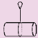
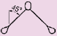
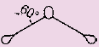
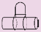

Anschlagmittel aus Naturfaserseilen
Die Tragfähigkeiten gelten für Anschlag-Faserseile in Anlehnung an DIN EN 1492-4:2009-02. Die Tabelle gilt für gedrehte Seile im Trossenschlag aus Manila nach DIN EN ISO 1181:2005-02 und Hanf nach DIN EN 1261:1995-10.
Faserstoff |
Seil- Nenndurch- messer |
Tragfähigkeit in kg | ||||
| Einzelstrang | Doppelstrang mit Neigungswinkeln von |
Endlosstrang/ Kurzgespleißt*) geschnürt |
||||
| direkt | geschnürt | 0° bis 45° | 45° bis 60° | |||
 |
 |
 |
 |
|||
Manila |
16 | 260 | 200 | 360 | 260 | 400 |
| 20 | 400 | 320 | 560 | 400 | 640 | |
| 24 | 580 | 460 | 810 | 580 | 920 | |
| 28 | 780 | 620 | 1 100 | 780 | 1 250 | |
| 32 | 1 000 | 800 | 1 400 | 1 000 | 1 600 | |
| 36 | 1 300 | 1 000 | 1 800 | 1 300 | 2 000 | |
| 40 | 1 500 | 1 200 | 2 100 | 1 500 | 2 400 | |
| 48 | 2 200 | 1 800 | 3 100 | 2 200 | 3 600 | |
Hanf |
16 | 250 | 200 | 350 | 250 | 400 |
| 20 | 350 | 280 | 500 | 500 | 560 | |
| 24 | 500 | 400 | 700 | 500 | 800 | |
| 28 | 700 | 560 | 1 000 | 700 | 1 100 | |
| 32 | 900 | 720 | 1 300 | 900 | 1 440 | |
| 36 | 1 200 | 960 | 1 700 | 1 200 | 1 900 | |
| 40 | 1 400 | 1 100 | 2 000 | 1 400 | 2 200 | |
| 48 | 2 000 | 1 600 | 2 800 | 2 000 | 3 200 | |
*) Langgespleißte Seile nur 60 % der (DIN EN 1492-4: 2009-02, 5.5.2 (g))
Ablegereife
Bei Feststellung folgender Schäden sind Faserseile (allgemein) der Benutzung
zu entziehen:
zusätzlich gilt für Naturfaserseile:
zusätzlich gilt für Chemiefaserseile:
Belastungstabelle für Chemiefaserseile und Hinweise siehe hier.